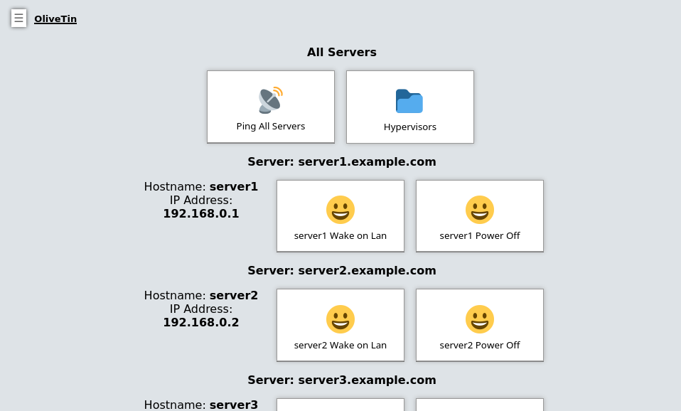

Dashboards
OliveTin generates a default view of actions which is useful for simple OliveTin use cases - this is always called "Actions" and cannot be renamed. The Actions view also does not support entities, fieldsets or folders.
If you want to start organizing OliveTin actions more effectively, then Dashboards are for you!

Example configuration
config.yaml# Actions MUST be defined in the actions section, not in the dashboards
# section. The dashboards only "link" to actions by their title.
actions:
- title: Ping All Servers
shell: echo "ping all..."
- title: '{{ server.name }} Wake on Lan'
shell: 'wol {{ server.name }}'
timeout: 10
- title: '{{ server.name }} Power Off'
shell: 'ssh root@{{ server.name}} "poweroff"'
timeout: 10
# Dashboards are a way of taking actions from the default "actions" view, and
# organizing them into groups - either into folders, or fieldsets.
#
# The only way to properly use entities, are to use them with a `fieldset` on
# a dashboard.
dashboards:
# Top level items are dashboards.
- title: My Servers
contents:
# On dashboards, all items need to be in a "fieldset". If you don't
# specify a fieldset, actions will be assigned to a fieldset with a title
# called "default".
- title: All Servers
type: fieldset
contents:
# The contents of a dashboard will try to look for an action with a
# matching title IF the `contents: ` property is empty.
- title: Ping All Servers
# If you create an item with some "contents:", OliveTin will show that as
# directory.
- title: Hypervisors
contents:
- title: Ping hypervisor1
- title: Ping hypervisor2
# If you specify `type: fieldset` and some `contents`, it will show your
# actions grouped together without a folder.
- type: fieldset
entity: server
title: 'Server: {{ server.hostname }}'
contents:
# By default OliveTin will look for an action with a matching title
# and put it on the dashboard.
#
# Fieldsets also support `type: display`, which can display arbitary
# text. This is useful for displaying things like a container's state.
- type: display
title: |
Hostname: <strong>{{ server.name }}</strong>
IP Address: <strong>{{ server.ip }}</strong>
# These are the actions (defined above) that we want on the dashboard.
- title: '{{ server.name }} Wake on Lan'
- title: '{{ server.name }} Power Off'